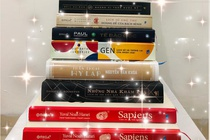

Trong cuộc sống ngày càng hiện đại và phát triển như hiện nay, vào những lúc rảnh rỗi chúng ta thường có thói quen sử dụng các thiết bị điện tử như điện thoại hay laptop mà quên đi thói quen đọc sách. Việc đọc sách thường sẽ đem lại nhiều lợi ích và có ý nghĩa tích cực đến mỗi chúng ta. Vì vậy trong bài viết này, chúng tôi sẽ giới thiệu cho bạn đọc hiểu rõ hơn về ý nghĩa của thói quen đọc sách mang lại trong cuộc sống.
Từ trước đến nay, thói quen đọc sách đã trở thành một nét đẹp văn hóa, giúp chúng ta lĩnh hội nhiều nguồn tri thức khác nhau trên khắp thế giới. Theo sự phát triển của xã hội, ngày càng nhiều những cuốn sách được ra mắt và xuất bản với rất nhiều thể loại, chủ đề lĩnh vực khác nhau, để phục vụ cho nhu cầu đọc và tìm hiểu của con người trong đời sống.
